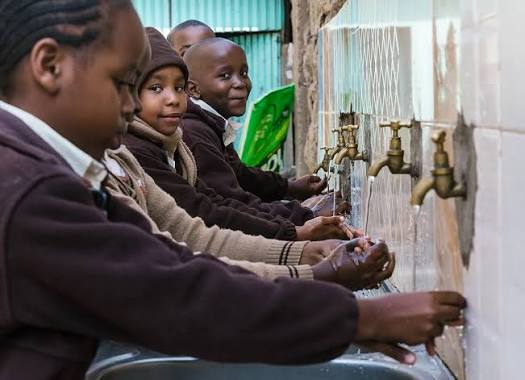
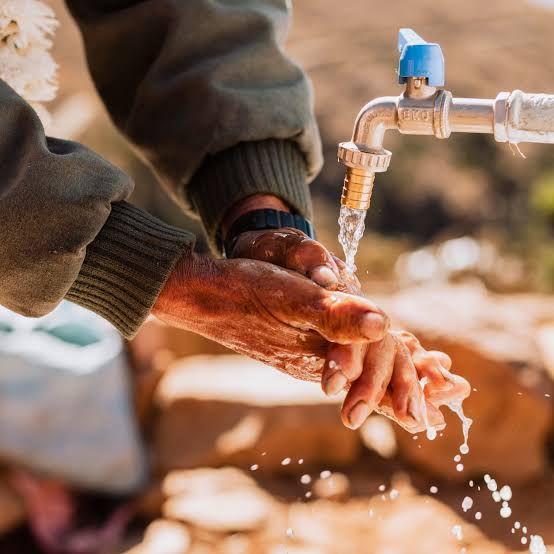

About Us
Our Mission
We promote clean water and sanitation services sustained by communities, governments, and businesses.
Our Vision
A world where everyone has access to safe water and sanitation.
Our Values
- Critical Thinking
- Respect for Human Rights
- Sustainability
- Accountability
- Community Engagement
- Education
Our Ideal Impact
We aim to reduce waterborne diseases and improve hygiene through infrastructure, education, and community ownership.
How You Can Help
- Donate — your contribution multiplies through strategic partnerships.
- Volunteer for events and community projects.
- Advocate for better water and sanitation policies.
- Share our mission through your networks.
- Provide feedback to help us improve and meet local needs.



To donate, partner, or learn more, visit our Contact page.